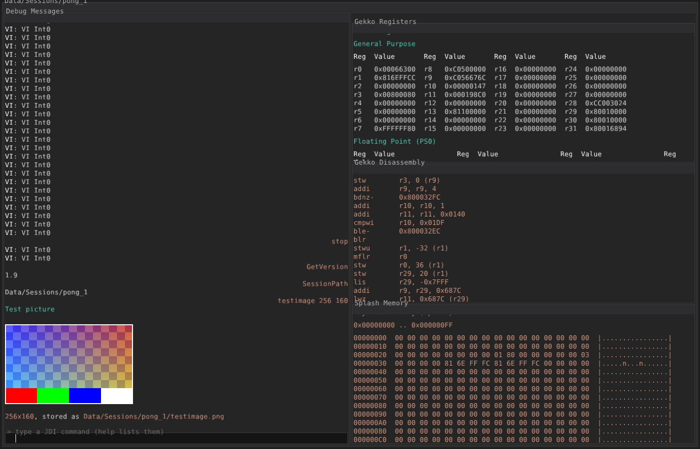
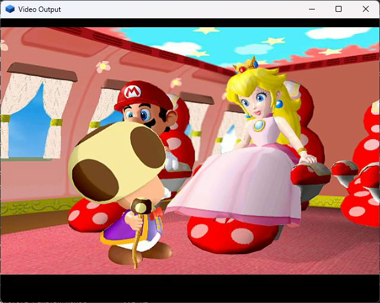
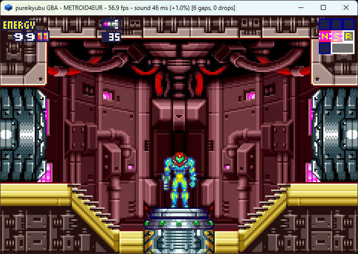
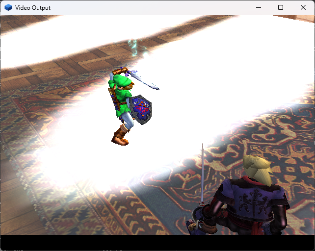

What is new
Release 1.9 is the feature release: an integrated Game Boy Advance and Game Boy, a complete software implementation of the Flipper graphics blocks, a new debugger, an MCP server for LLM agents, a hardware-interface profiler, a headless build and a DSP recompiler — plus the fixes that run the Metroid Prime intro to its title screen and boot Super Mario Sunshine.
Game Boy Advance and Game Boy
src/gba is a second console written from the public specifications, with a
free boot ROM that draws the pureikyubu logo, its own SDL2 front end and its own test
harness. pureikyubu --gba game.gba runs a cartridge;
pureikyubu game.gbc runs the Game Boy inside it.
The software GFX pipeline
The Flipper blocks have a CPU implementation next to the OpenGL one: a real EFB memory
array, a real TMEM and a copy engine that writes the XFB the video interface scans out.
GFX_PIPELINE switches pipelines on the fly.
DebugUI2
A new debugger with its own thread, its own OpenGL window and a session per run. Every panel is the Markdown of a JDI command: thirteen tabs from Gekko to the profiler, plus the GBA and Game Boy machines.
The MCP server
pureikyubu --mcp publishes the whole debug interface as Model Context
Protocol tools — around 170 of them — so an LLM agent drives the emulator over
stdin/stdout.
HW interface profiler
What the console's channels actually move, per emulated second: the 60x and Splash buses, the PI/CP FIFOs, every DMA engine, the audio mixer input, the GFX primitives and the VI frames — as a table, a PNG or an overlay.
Headless build and DSP JIT
A windowless console target for benchmarks and MCP runs (with an offscreen OpenGL backend on Windows), a security review behind a small verifier layer, UTF-8 throughout the interface, and a DSP basic-block recompiler that is 1.5–1.8x faster.
Screenshots
Captured from the current development build (release 1.9 line).




Build it
Windows
Open scripts/VS2026/pureikyubu.sln in Visual Studio 2026 and press Build.
Debug and Release configurations exist for both the Win32 and the SDL front end.
Linux
CMake + SDL2 build, verified under WSL2 as well:
sudo apt install libglew-dev
git clone https://github.com/emu-russia/pureikyubu.git
cd pureikyubu && git submodule update --init
cd build && cmake .. && make
./pureikyubu pong.dolThe software GFX pipeline
The Flipper graphics subsystem now has a second rendering path: a software (CPU) implementation
of the same hardware blocks, written from the GameCube specifications, switchable on the fly
through the GFX_PIPELINE configuration variable and drawing through a real EFB
memory array whose copy-engine output (the XFB) the video interface scans out.
Read the page · По-русски · Wiki · Issue #384
The MCP server
The emulator can run as a local MCP (Model Context Protocol) server: an LLM agent starts it as its own child process and drives the whole debug interface through it — every command of the emulator becomes a tool. Load a disc image, read the Gekko registers, dump main memory, watch the hardware counters, take a screenshot.
{
"mcpServers": {
"pureikyubu": { "command": "pureikyubu_headless", "args": ["--mcp"] }
}
}Read the page · По-русски · Wiki · Issue #383
Up next
Release 2.0 will be the next major version, the peripheral release. It is aimed at the console's peripheral devices — the EXI bus and the devices on it (memory cards, the Broadband Adapter, the RTC), the serial interface and the pads, the disk interface and the drive, and the link port the GBA side already has — and it should close out many of the emulator's features, so that the list of what is not implemented yet shrinks to what genuinely does not matter.
After that the project moves into its steady state: planned, methodical improvement — performance work and bug fixing release after release, rather than another feature push. The architecture is in place; what remains is making what is there faster, more exact and more complete. The details are in the 1.9.1 release notes.
Documentation
Release Notes 1.9.1
English release notes · Заметки о релизе на русском · Markdown
Digest since 1.6
Wiki
Emulator internals: Flipper, GFX, Gekko, Debug UI and the DSP IROM analysis.
Archive
Earlier releases, kept for reference.
Release Notes 1.9
English release notes · Заметки о релизе на русском · Markdown
Release Notes 1.8
English release notes · Заметки о релизе на русском · Markdown
Release Notes 1.7
English release notes · Заметки о релизе на русском · Markdown